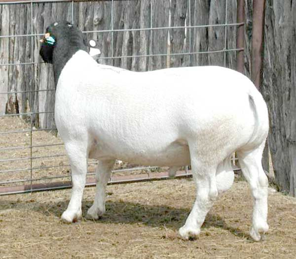
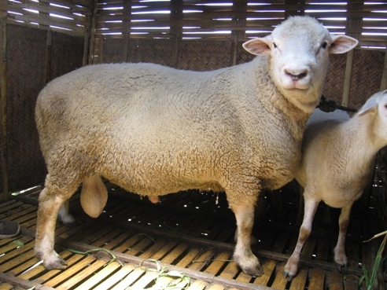

Domba Bibit Unggul
Kami menyediakan domba bibit unggul dengan kualitas terbaik, hasil
persilangan ras impor pilihan seperti Crossing Dorper dan Crossing
Texel. Kedua jenis ini terkenal dengan pertumbuhan bobot yang cepat,
kualitas daging yang baik, dan ketahanan tubuh yang kuat. Domba
bibit unggul kami dirawat dengan manajemen pakan dan kesehatan yang
ketat, sehingga cocok untuk peternak pemula maupun peternak yang
ingin mengembangkan usaha breeding secara profesional.
Pesan Sekarang

Domba Potong (Kurban & Aqiqah)
Kami menyediakan domba siap potong, termasuk jenis Crossing Dorper
dan Crossing Texel, dengan kualitas sehat dan bobot yang sesuai
syariat untuk kebutuhan ibadah qurban dan aqiqah. Kedua jenis ini
dikenal memiliki pertumbuhan bobot yang stabil dan daging yang
lezat, sehingga cocok untuk memenuhi kebutuhan konsumsi maupun
ibadah Anda. Domba potong kami dipelihara dengan manajemen pakan
yang terukur agar menghasilkan kualitas daging yang prima
Pesan Sekarang

Jasa Pemotongan dan Harga Daging
Kami menyediakan layanan pemotongan domba secara profesional sesuai
dengan prosedur halal, dilengkapi dengan pengolahan dan pengemasan
daging yang rapi dan higienis. Pelanggan dapat langsung menerima
daging yang sudah bersih dan siap diolah, sehingga memudahkan dalam
proses distribusi qurban, aqiqah, maupun konsumsi sehari-hari.
Selain itu, kami juga melayani penjualan daging domba segar yang
dapat dibeli berdasarkan bagian tertentu sesuai kebutuhan. Tersedia
berbagai pilihan potongan seperti kepala, dada, paha, iga, dan
bagian lainnya. Seluruh daging berasal dari domba sehat pilihan,
sehingga kualitas, kesegaran, dan kebersihannya tetap terjaga.
Layanan ini sangat cocok untuk kebutuhan rumah tangga, usaha
kuliner, maupun berbagai keperluan lainnya.
Pesan Sekarang